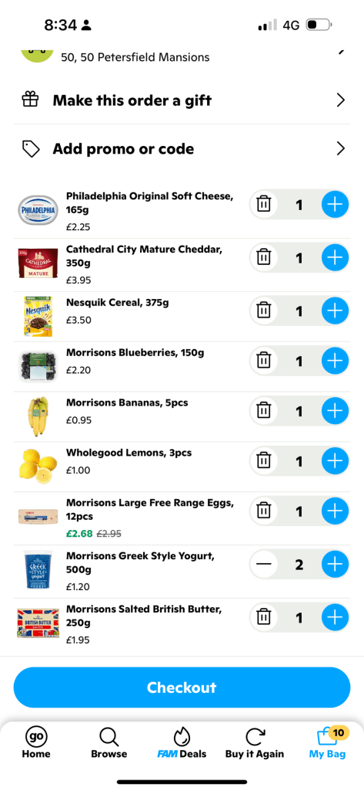
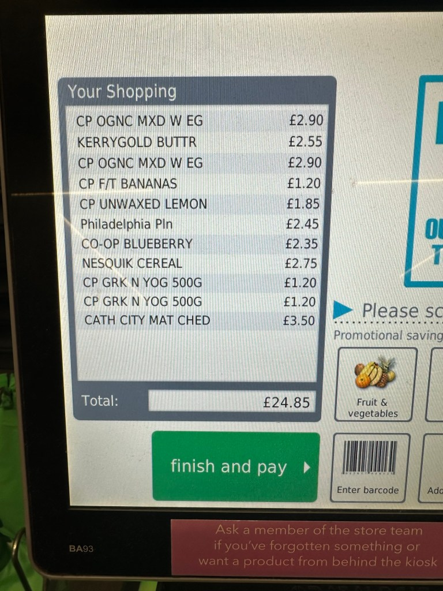

Why You Don’t Always Save by Going to the Grocery Store: A Closer Look at the Cost of Convenience vs. In-Store Shopping


When it comes to grocery shopping, the common belief is that physically going to the store is always cheaper than ordering online. After all, aren’t you saving on delivery fees and extra charges by just picking up your groceries yourself? While this might be true in some cases, the reality is more nuanced. Services like GoPuff are changing the game, proving that ordering online can sometimes be just as cost-effective — or even cheaper — than visiting your local supermarket. Here’s why.
1. The Illusion of Savings at the Supermarket
Walking into a supermarket, it’s easy to assume you’re getting the best deals. You can physically inspect items, compare prices, and take advantage of in-store promotions. However, this environment is precisely designed to encourage you to spend more. Supermarkets often use a variety of psychological tricks to increase impulse buying:
-
Strategic Product Placement: Essential items are often placed at the back of the store, forcing you to walk past a myriad of other products, increasing the chance of unplanned purchases.
-
Eye-Level Marketing: The most expensive items are often placed at eye level, making them the first ones you see, while cheaper alternatives are placed higher or lower on the shelves.
-
Special Promotions and End Caps: Promotions are often not as great as they seem, and the items placed on end caps (the display at the end of aisles) are there because the store wants to move those products, not necessarily because they are on sale.
Even if you walk in with a strict list and a budget, the temptation to grab an extra snack, try a new product, or splurge on an item just because it’s on sale can add up quickly. Additionally, the premium packaging in stores often leads to higher prices than you would pay for a less marketed version online.
2. The Convenience Premium: Is It Worth It?
On the other hand, services like GoPuff have adapted to the modern shopper's needs, focusing on convenience and quick delivery. While on the surface, it might seem more expensive due to delivery fees or minimum order requirements, there are hidden savings that many overlook:
-
Curated Selection of Products: Online grocery services often offer a streamlined selection of products. This curated approach means you are not overwhelmed by choices and can focus on what you need. More importantly, these services often pick items that offer better value for money to remain competitive.
-
Avoiding Impulse Buys: By shopping online, you’re less likely to make impulse purchases. You stick to your list, which can save you significantly over time. You’re also not influenced by in-store promotions or the visual appeal of packaging that can often lead to spending more.
-
Transparent Pricing and Deals: Online grocery platforms often provide transparent pricing and list discounts upfront. You can easily compare the prices of items across different brands or with other online stores without feeling rushed or distracted.
3. The Subscription Model: A Hidden Saver
Many online grocery services, including GoPuff, operate on a subscription model. While this might seem like an additional cost at first glance, it can actually lead to significant savings:
-
Exclusive Discounts and Free Deliveries: Subscribers often get access to exclusive discounts, deals, and free or reduced delivery fees. Over time, these savings can outweigh the cost of the subscription.
-
Bundled Savings: Subscription services often encourage bulk buying or offer bundled savings on popular items. This can help you save money on essentials that you use regularly.
-
Reduced Gas and Time Costs: Think about the time and money you save on transportation. Not only do you save on gas or public transport costs, but you also avoid the stress of finding parking and navigating crowded aisles.
4. Packaging Costs: An Overlooked Expense
Another hidden cost of shopping in-store is the price of packaging. Supermarkets often stock a wide range of products in various packaging sizes, many of which are designed to attract attention and convey a sense of quality. However, this packaging often comes with a cost that is passed down to the consumer.
In contrast, online grocery services can minimize packaging costs by choosing products that are more cost-effective and practical to ship. This focus on efficiency and cost-saving is another way online shopping can sometimes undercut the perceived savings of in-store purchases.
Conclusion: Rethinking Grocery Shopping
While the traditional grocery store run has its place, it’s important to consider the hidden costs associated with it. Services like GoPuff might seem more expensive upfront, but they offer savings in areas we often overlook — impulse purchases, packaging costs, and the true price of convenience.
Next time you’re planning your grocery shopping, consider both the tangible and intangible costs. You might find that the convenience of ordering online not only saves you time but also keeps more money in your pocket.
Imported from rifaterdemsahin.com · 2024